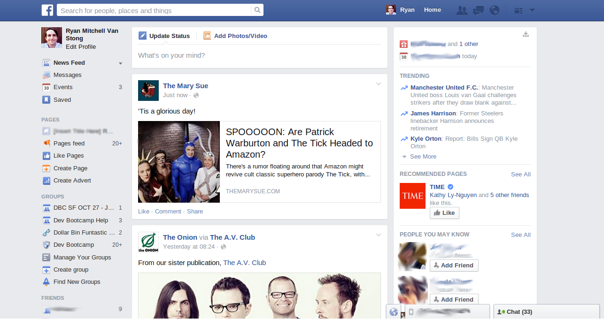
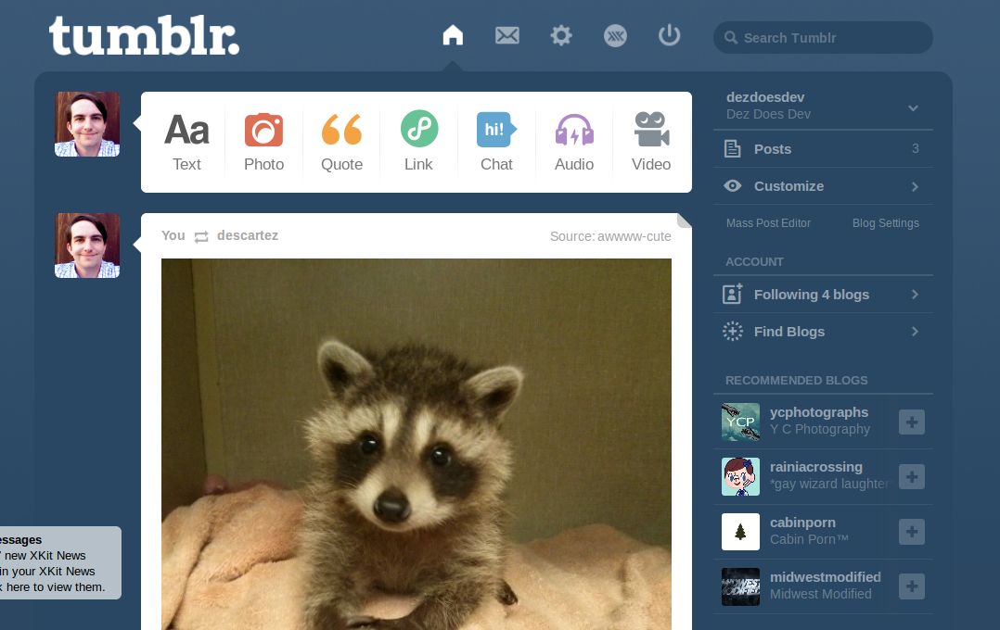
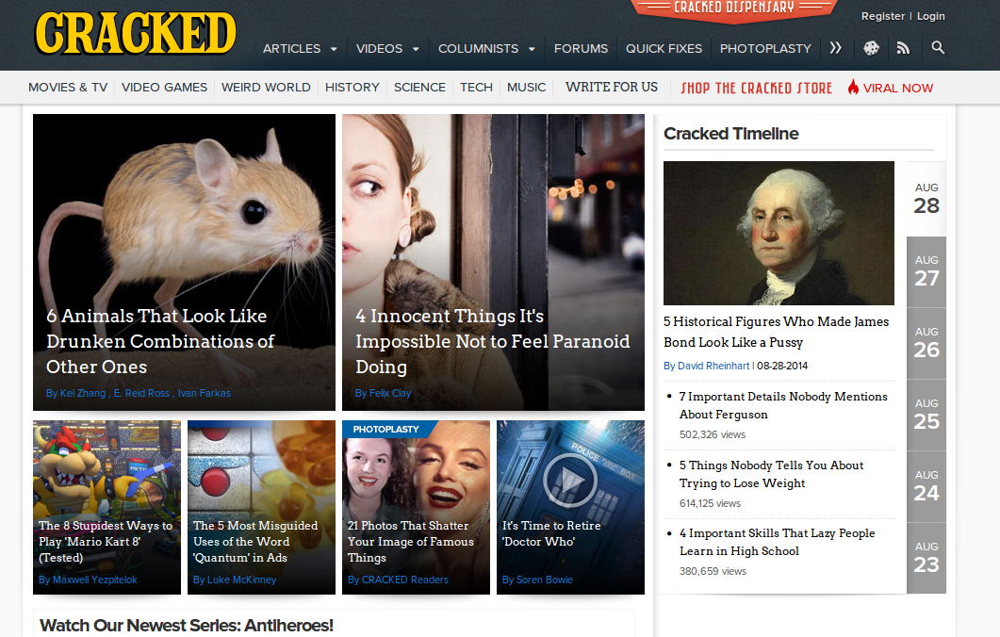

DBC Week 1, Challenge 11: Comparing Websites
The Goal: Compare three websites and their design in order to better understand said design.
The Sites:
Facebook;
Tumblr;
Cracked;
Two of the sites here you have already heard of, considering one is a major social network, and another is a major blogging platform (which just got bought by Yahoo! in the past year). Number three on the list, Cracked, is a popular comedy website. I have no idea if you know about it or not. Top notch humor articles and videos, all of it original content. It is a specific type of humor though, which may not be everyone's cup of dark, sometimes caffienated beverage.
Let's get to it then shall we?
-
Facebook:
-

-
There is a lot going on here. But it doesn't seem to cluttered. Not at all. It's simple, direct, calming, informative, and very subtle.
Notice the colors? Nice relaxing blues and neutral white. That's intentional. Blue makes people relax and more comfortable, which is a good choice if your site is all about sharing personal info. White is inoffensive, so it's a good companion to the blues. It also means that you are willing to spend more time on the site because there is very little eye strain. The white is primarily used where people are posting, meaning that the eye is drawn to the contrast (and the position of the content).
This site solves a problem elegantly: How to share my own thoughts, things I've found, and experiences while informing me of others' experiences. The Update option is tied directly into the Feed, where everyone else is posting. The design keeps what you share and what others share connected.
Whether that content in the Feed is good or not is up to you. You can customize your feed, eliminate posts you dislike, and the site learns from those choices. You can also search easily from above: the top of the site, the navigation bar, has a search area along with the most pertinent items you may need. You can always search, look at your notifications, your personal messages, and get to your feed from here. This navbar is constant throughout the whole site. You never will lose it.
After using the site for a while, I didn't really notice where the time has gone. Provided there was always new content, I could see what was happening around me in other places in the world (whether that be just what my friends are doing or political issues). If there is no new content (like on Sundays or late at night), you still end up refreshing constantly to see if you are missing anything. After that I think it's time to take a break. Facebook doesn't sell anything directly to you (aside from those odd little ads on the side that tell me that there are Christian Singles in my area), but it does have a cost. That of your time.
-
Tumblr:
-

-
Ah yes. Tumblr. Breathe it in. Home of memes and the little blogs of down to earth people. Or teenagers. Or anyone really. Tumblr is pretty well known (sometimes infamously) for it's diverse userbase. Look at that racoon! He's adorable! I'm sure that the post he is in has something to do with the Guardians of the Galaxy's star Rocket Racoon. If you could just scroll down...
Like Facebook, Tumblr uses blues to reduce eyestrain, and contrast to draw the eye to both the posting bar and the content below it. Also, like Facebook, your feed is determined by who you follow. Unlike facebook, sharing is more integrated. As is the source of the original post. You "reblog" more than share, where you post the content that you see on your own blog, rather than a personal page. You can add your own comments to the post, but that can be lost in others' reblogs based on how they edit it or the source they shared it from. You can also like a post, and you can look at your past "likes" if you want to look at them again. Liking is more private and doesn't post to your blog. Liking and reblogging contributes to its post count, which is shown at the bottom of the post.
Also like Facebook, the feed can go on forever, provided there is content to show and memory to display it. You can scroll down as long as much as you like, but depending on your computer, the more you scroll, the harder it is for the computer to keep up. There is a handy arrow that appears in the upper right hand corner if you scroll down a few posts, which brings you back up to the top. Since the feed can go on forever, it's easy to lose your place amongst all of the content.
You never really leave the feed, so I've never experienced too much of how people customize their blogs.
Overall, the site is simple and friendly, with big pictures for the posts and everybody's comments and observations below. The icons are slightly cartoonish, and the whole site is about soft edges. It's a fun little place to waste time (and it can be a waste of good time). Saving and organizing posts is dependent on "tags" which look like "#this". But if others don't tag things, then you can't search by them, and the sheer volume of posts you can accumulate can be overwhelming.
-
Cracked:
-

-
Now to Cracked. Humor site extraordanaire. Also some fart jokes. Unlike the other two sites, there is very little blue here. Just some grays, a yellow logo, and some red.
The navbar is pretty self-explanatory, and it stays throughout the whole site. The first thing you see is links to the various articles that have been contributed with big pictures. You get two big pictures and four smaller ones, all recent and popular posts. One of them is even a video!
The design is simple, just like the others, and since there isn't much of a social aspect (you can post comments on the articles, but that's a peripheral) you can just focus on the content. I'd call the design more industrial than the others. With the dark gray and the content listed in the navbar the goal is simple: read our articles, hope you like them. There is a store as well, the "Cracked Dispensary" button at the top. I've never bought anything there. I don't think I've even visited it. A good portion of their profits come from ad revenue, off to the side of the articles linking to clickbait sites and whatever else their ad aggregator puts together.
It's easy to read the articles, I've gotten lost in there, there's always something to find. The subjects are odd, as you can see. The articles are always informative though, despite their humorous wording. I've learned so much history and science from this humble humor site. After spending more than an hour of this site I've laughed and learned, and that's a wonderful thing, isn't it?
-
Final Thoughts:
-
All of these sites accomplish what they set out to do: display content. They do solve these problems in different ways though. Facebook is simple, clean, but lacks much of a personality. That's not a bad thing, because too much personality gets in the way of displaying the content. Sometimes the friendlier, softer look of Tumblr can get exhausting, because you start to notice how same-y the posts are formatted. Cracked does the best at having a personality but still accomplishing it's goals. The images are integrated into how you navigate the site rather than just something you have to display.
Cracked may have more of a personality, but it can do that because it is a site displaying original and curated content. It's closer to a magazine than a notice board. When you are generating your own content (rather than having content posted with little interference from the sites' staff) you can do what you want.
But if you are displaying user-generated content, simple and basic is best.